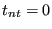
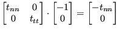
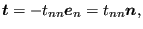
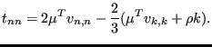
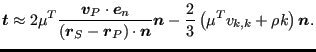

Next: Pressure term Up: Diffusion term Previous: Non-moving Wall Contents
In case of sliding conditions the shear stress is zero: . The stress vector now amounts to:
|  | (572) |
or
|  | (573) |
where
|  | (574) |
Consequently,
 can be approximated by:
can be approximated by:
|  | (575) |
This finally amounts to: